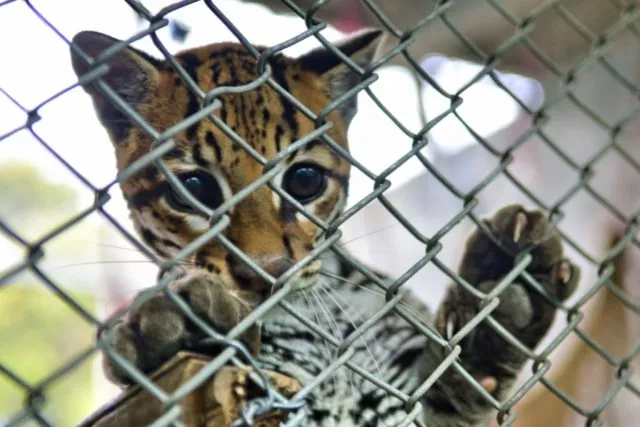

Cuales son los factores que causan el peligro de extinción de las distintas especies de animales
Hay ciertos factores que hacen que provoca el peligro de extincion de las especies de animales.
Factores:
- Deforestación.
- Contaminacion del agua.
- Contaminacion de la tierra.
- Caza ilegal de especies.
- Trafico ilegal de especies.

Maria Paula Sanchez Martinez